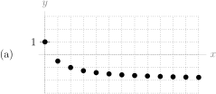
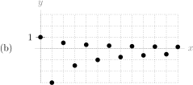
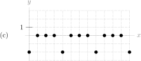

1
Assuming the sequences continue as shown, estimate the limit of each sequence from its graph.



Assuming the sequences continue as shown, estimate the limit of each sequence from its graph.
Suppose \(a_n\) and \(b_n\) are sequences, and \(a_n=b_n\) for all \(n \geq 100\text{,}\) but \(a_n \neq b_n\) for \(n \lt 100\text{.}\)
True or false: \(\displaystyle\lim_{n \to \infty} a_n = \lim_{n \to \infty} b_n\text{.}\)
Let \(\{a_n\}_{n=1}^{\infty}\text{,}\) \(\{b_n\}_{n=1}^{\infty}\text{,}\) and \(\{c_n\}_{n=1}^{\infty}\text{,}\) be sequences with \(\lim\limits_{n \to \infty}a_n=A\text{,}\) \(\lim\limits_{n \to \infty}b_n=B\text{,}\) and \(\lim\limits_{n \to \infty}c_n=C\text{.}\) Assume \(A\text{,}\) \(B\text{,}\) and \(C\) are nonzero real numbers.
Evaluate the limits of the following sequences.
Give an example of a sequence \(\{a_n\}_{n=1}^{\infty}\) with the following properties:
Give an example of a sequence \(\{a_n\}_{n=1}^{\infty}\) with the following properties:
Give an example of a sequence \(\{a_n\}_{n=1}^{\infty}\) with the following properties:
The limits of the sequences below can be evaluated using the squeeze theorem. For each sequence, choose an upper bounding sequence and lower bounding sequence that will work with the squeeze theorem.
Below is a list of sequences, and a list of functions.
Let \(\{a_n\}_{n=1}^\infty\) be a sequence defined by \(a_n = \cos n\text{.}\)
Remark: this demonstrates intuitively, though not rigorously, why \(\lim\limits_{n \to \infty}\cos n\) is undefined. We consistently find terms in the series that are close to \(-1\text{,}\) and also consistently find terms in the series that are close to 1. Contrast this to a series like \(\big\{\cos(2\pi n)\big\}\text{,}\) whose terms are always 1, and whose limit therefore is 1. It is possible to turn the ideas of this question into a rigorous proof that \(\lim\limits_{n \to \infty}\cos n\) is undefined. See the solution.
Determine the limits of the following sequences.
Determine the limit of the sequence \(a_n = \dfrac{4n^3-21}{n^e+\frac{1}{n}}\text{.}\)
Determine the limit of the sequence \(b_n = \dfrac{\sqrt[4]{n}+1}{\sqrt{9n+3}}\text{.}\)
Determine the limit of the sequence \(c_n = \dfrac{\cos(n+n^2)}{n}\text{.}\)
Determine the limit of the sequence \(a_n = \dfrac{n^{\sin n}}{n^2}\text{.}\)
Determine the limit of the sequence \(d_n = e^{-1/n}\text{.}\)
Determine the limit of the sequence \(a_n = \dfrac{1+3\sin(n^2)-2\sin n}{n}\text{.}\)
Determine the limit of the sequence \(b_n=\dfrac{e^n}{2^n+n^2}\text{.}\)
Find the limit, if it exists, of the sequence \(\big\{a_k\big\}\text{,}\) where
Consider the sequence \(\Big\{(-1)^n\sin\big(\frac{1}{n}\big)\Big\}\text{.}\) State whether this sequence converges or diverges, and if it converges give its limit.
Evaluate \(\displaystyle\lim_{n\rightarrow\infty}\left[\frac{6n^2+5n}{n^2+1} +3\cos(1/n^2) \right] \text{.}\)
Find the limit of the sequence \(\displaystyle\left\{\log\left(\sin\frac{1}{n}\right)+\log(2n)\right\} \text{.}\)
Evaluate \(\displaystyle\lim_{n \to \infty}\left[\sqrt{n^2+5n}-\sqrt{n^2-5n}\right]\text{.}\)
Evaluate \(\displaystyle\lim_{n \to \infty}\left[\sqrt{n^2+5n}-\sqrt{2n^2-5}\right]\text{.}\)
Evaluate the limit of the sequence \(\left\{n\left[\left(2+\frac1n\right)^{100}-2^{100}\right]\right\}_{n=1}^{\infty}\text{.}\)
Write a sequence \(\{a_n\}_{n=1}^\infty\) whose limit is \(f'(a)\) for a function \(f(x)\) that is differentiable at the point \(a\text{.}\)
Your answer will depend on \(f\) and \(a\text{.}\)
Let \(\{A_n\}_{n=3}^\infty\) be the area of a regular polygon with \(n\) sides, with the distance from the centroid of the polygon to each corner equal to 1.
Suppose we define a sequence \(\{f_n\}\text{,}\) which depends on some constant \(x\text{,}\) as the following:
For a fixed constant \(x \ge 1\text{,}\) \(\{f_n\}\) is the sequence \(\{0,0,0,\ldots,0,1,0,\ldots,0,0,0,\ldots\}\text{.}\) The sole nonzero element comes in position \(k\text{,}\) where \(k\) is what we get when we round \(x\) down to a whole number. If \(x \lt 1\text{,}\) then the sequence consists of all zeroes.
Since we can plug in different values of \(x\text{,}\) we can think of \(f_n(x)\) as a function of sequences: a different \(x\) gives you a different sequence. On the other hand, if we imagine fixing \(n\text{,}\) then \(f_n(x)\) is just a function, where \(f_n(x)\) gives the \(n\)th term in the sequence corresponding to \(x\text{.}\)
Determine the limit of the sequence \(\displaystyle b_n=\left(1+\frac{3}{n}+\frac{5}{n^2}\right)^n\text{.}\)
A sequence \(\big\{a_n\big\}_{n=1}^\infty\) of real numbers satisfies the recursion relation \(a_{n+1} = \dfrac{a_n+8}{3}\) for \(n\ge 1\text{.}\)
Zipf's Law applied to word frequency can be phrased as follows:
The most-used word in a language is used \(n\) times as frequently as the \(n\)-th most word used in a language.
Sources: